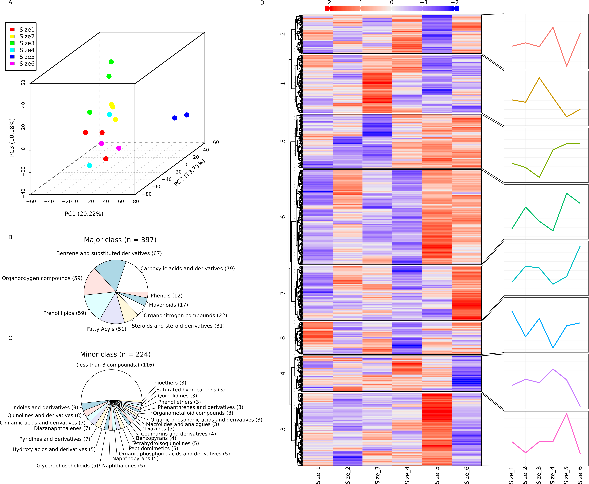
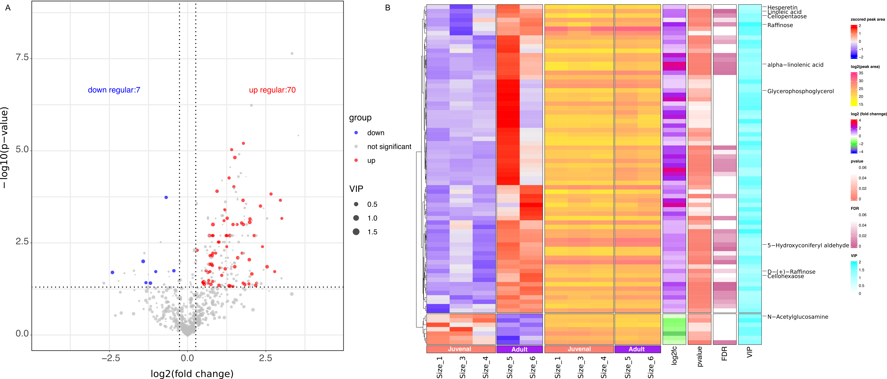

All collected samples were flash frozen and ground to a fine powder with a mortar and pestle. The powder of each sample was extracted overnight using 80% HPLC grade methanol containing 1 μM chrysin as the internal standard and the ratio of the fresh weight to the volume of extraction solution was kept as 0.1 g/ml. The undissolved sample residues were precipitated by centrifugation at 13000 rpm for 30 min at 4℃. The clear supernatants were loaded into injection vials and ready for UHPLC-MS/MS.
High-Performance Liquid Chromatography
For UHPLC-MS/MS assay, The vanquish-flex UHPLC system was coupled to Q Exactive Plus mass spectrometry (Thermo Fisher Scientific) for metabolite separation and detection. A Hypersil GOLD column (2.1×100 mm.1.9 um; Thermo Fisher Scientific) was employed for compound separation at 30°C and 5 μl of sample was loaded. The mobile phase A was HPLC grade H2O with 0.1% (v/v) formic acid (Merck, Germany) and phase B was HPLC grade acetonitrile (Merck, Germany). The gradient elution conditions were set as follows: From 0 to 2min, the mobile phase B increases to 10%; From 2 to 10min, the mobile phase B increases to 50%; From 10 to 10.1min， the mobile phase B increases to 80%; From 10.1 to 13 min, the mobile phase B was kept at 80%; From 13 to 14 min the mobile phase B increases to 95%; From 14-18 min the mobile phase B decreased to 10%. The flow rate was 0.3 ml/min. The MS data acquisition was performed by Q Exactive Plus (ThermoFisher Scientific, Rockford, IL) system. In full scan MS/ddMS2 mode, the resolutions of full scan MS and ddMS2 were set at 70000 and 17500, respectively. The automatic gain control (AGC) target and maximum injection time in full scan MS settings were 1e6 and 100 ms, while their values were 2e5 and 50 ms in dd MS2 settings. The TopN (N, the number of top most abundant ions for fragmentation) was set to 8, and collision energy was set to 20%, 40% and 60%. A heated ESI source was used at positive and negative ion mode. the spray voltage was set as 3.5 KV for positive mode and 3.2 KV for negative mode;The capillary temperature and aux gas heater temperature were set as 320 and 350 °C, respectively. Sheath gas and aux gas flow rate were set at 35 and 15 (in arbitrary units), respectively. The S-lens RF level was 50.
Figure legend Figure S1. The auto-scaled intensity box plots of QC samples before and after SVR normalization.

Figure 2. overview of metabolomics data
Figure legend: Overview of metabolomics data. A. PCA result of annotated compounds. Coordinates x,y and z represent first 3 component of PCA analysis result, numbers in parentheses represents the variance explanation rate of corresponding component. B.Compounds Major class. Major class means classes with compounds number more than 10, C. Compound Minor class, Classes with compounds number between 3 to 10. D. Accumulation profile of all annotated compounds. Numbers in left means clusters number of k-means. line diagram in left represents the log10 transformed average peak area of correspoding clusters.
Figure 2: overview

Figure 3. DAM analysis
Figure 3: overview
表2. 差异代谢物
√ Successfully imported: 79 obs. of 23 variables
────────────────────────────────────────────────────────────────────────────────────────────────────────────────────────────────────────────────────────────────────────────────────────────────────────────────────────────────────────────────────────────────────────────────────────────────────────────────────────────────────────────────────────────────────────────────────────────────────────────────────
CompoundID Adult Juvenal p FDR VIP log2fc Compound.name CAS.ID HMDB.ID KEGG.ID Lab.ID Adduct CE SS Total.score Database Level PubChem.ID INCHIKEY Formula mz rt
────────────────────────────────────────────────────────────────────────────────────────────────────────────────────────────────────────────────────────────────────────────────────────────────────────────────────────────────────────────────────────────────────────────────────────────────────────────────────────────────────────────────────────────────────────────────────────────────────────────────────
1 M496T787_POS 19510745.31 103211662.77 .020 * 0.10 1.58 -2.40 (1)-(7-Hydroxy-4-oxido-10-oxo-3,5,9-trioxa-4-phosphapentacosyl)trimethylammonium 4-oxide 14863-27-5 NA NA MONA_18371 (M+H)+ 40 0.71 0.82 MoNA_0.0.1 2.00 NA ASWBNKHCZGQVJV-UHFFFAOYSA-N C24H50NO7P 496.34 786.96
2 M137T496_POS 3245090.76 8689389.94 .010 * 0.07 1.77 -1.42 2-Hydroxyacetophenone NA NA C07189 MONA_14559 (M+H)+ HCD (NCE 20-30-40%) 0.67 0.79 MoNA_0.0.1 2.00 NA ZWVHTXAYIKBMEE-UHFFFAOYSA-N C8H8O2 137.06 495.68
3 M417T223_NEG 1383487.41 3481792.07 .038 * 0.15 1.28 -1.33 5'-Butyrylphosphoinosine NA NA C06435 C06435 (M-H)- NA 0.99 KEGG_1.0 3.00 8669 WDYYVNNRTDZKAZ-UHFFFAOYSA-N C14H19N4O9P 417.08 222.90
4 M276T77_POS 12143651.81 27690888.92 .039 * 0.15 1.59 -1.19 Cardiospermin 54525-10-9 NA C08328 C00001440 (M+H)+ NA 1.00 KNApSAcK_0.0.1 3.00 NA MQTLCYHUTVTHFO-LJNCYVKVNA-N C11H17NO7 276.11 77.39
5 M593T384_POS 8920063.55 18075316.57 .019 * 0.10 1.18 -1.02 Agavoside A 56857-65-9 NA C08885 C00003562 (M+H)+ NA 1.00 KNApSAcK_0.0.1 3.00 NA NVCUAFIUMZCPGV-HCGSYDDWNA-N C33H52O9 593.37 383.95
6 M142T917_POS 32622671.98 52493880.67 <.001 *** 0.01 1.36 -0.69 L-Histidinol 4836-52-6 NA C00860 C00860 (M+H)+ NA 1.00 KEGG_1.0 3.00 4117 OEHAYUOVELTAPG-UHFFFAOYSA-N C6H11N3O 142.10 917.40
7 M73T938_POS 3626103.08 4918188.22 .018 * 0.10 1.43 -0.44 Calcium sulfide 20548-54-3 NA C17392 C17392 (M+H)+ NA 0.74 KEGG_1.0 3.00 96023745 GIOXJWTXELYBSD-KRWDZBQOSA-N CaS 72.94 937.95
8 M347T814_POS 60123478.10 48617327.62 .005 ** 0.04 1.31 0.31 11-Deoxycortisol NA NA C05488 S0333 [M+H]+ NCE30 0.81 MetDNA2 2.00 NA WHBHBVVOGNECLV-OBQKJFGGSA-N C21H30O4 347.22 813.90
9 M347T814_POS 60123478.10 48617327.62 .005 ** 0.04 1.31 0.31 Corticosterone 50-22-6 NA C02140 MONA_1137 (M+H)+ 15 (nominal) 0.68 0.75 MoNA_0.0.1 2.00 5753 OMFXVFTZEKFJBZ-HJTSIMOOSA-N C21H30O4 347.22 813.90
10 M321T887_POS 1236659.04 877356.05 .037 * 0.15 1.74 0.50 (15S)-15-Hydroxy-5,8,11-cis-13-trans-eicosatetraenoate 54845-95-3 NA C04742 C04742 (M+H)+ NA 1.00 KEGG_1.0 3.00 7313 ZYWUVGFIXPNBDL-UHFFFAOYSA-N C20H32O3 321.24 887.01
11 M922T537_NEG 205445214.93 145129702.32 .039 * 0.15 1.25 0.50 15,17(3)-Seco-F430-17(3)-acid NA NA C21512 C21512 (M-H)- NA 1.00 KEGG_1.0 3.00 336445150 NA C42H53N6NiO14 922.29 537.08
12 M75T140_NEG 108562770.28 75742206.04 .036 * 0.15 1.69 0.52 Glycolic acid NA NA C00160 MONA_15725 (M-H)- HCD (NCE 20-30-40%) 0.75 0.83 MoNA_0.0.1 2.00 NA AEMRFAOFKBGASW-UHFFFAOYSA-N C2H4O3 75.01 139.59
13 M103T140_NEG 85930893.59 59334437.41 .042 * 0.16 1.61 0.53 Malonic acid NA NA C00383 MONA_15800 (M-H)- HCD (NCE 20-30-40%) 0.68 0.79 MoNA_0.0.1 2.00 NA OFOBLEOULBTSOW-UHFFFAOYSA-N C3H4O4 103.00 139.59
14 M190T522_1_NEG 900290.61 598951.74 .018 * 0.10 1.18 0.59 Carbendazim 10605-21-7 NA C10897 C10897 (M-H)- NA 1.00 KEGG_1.0 3.00 13080 GISQOONCPYNURT-UHFFFAOYSA-N C9H9N3O2 190.06 522.11
15 M182T318_NEG 17040500.24 10871834.37 .020 * 0.10 1.34 0.65 Chlorphentermine 461-78-9 NA C07559 C07559 (M-H)- NA 1.00 KEGG_1.0 3.00 9762 YDUGWJMUYOGFLN-UHFFFAOYSA-N C10H14ClN 182.07 318.30
16 M484T355_POS 1384169.35 882036.29 .039 * 0.15 1.03 0.65 Oxolucidine A 221316-49-0 NA NA C00028783 (M+H)+ NA 0.96 KNApSAcK_0.0.1 3.00 NA QRIZONDFXOOWTA-UBBRGXTJNA-N C30H49N3O2 484.39 354.71
17 M330T380_POS 19149716.86 11992493.11 .033 * 0.14 1.21 0.68 (E)-N-[2-hydroxy-2-(4-hydroxyphenyl)ethyl]-3-(4-hydroxy-3-methoxyphenyl)prop-2-enamide NA NA NA MoNA_36993 (M+H)+ 20 V 0.69 0.80 MoNA_0.0.1 2.00 NA VJSCHQMOTSXAKB-YCRREMRBSA-N C18H19NO5 330.13 379.88
18 M220T92_POS 181264536.60 111847036.94 .002 ** 0.02 1.58 0.70 Pantothenate NA NA C00864 L0174 [M+H]+ NCE30 0.98 MetDNA2 2.00 NA GHOKWGTUZJEAQD-ZETCQYMHSA-N C9H17NO5 220.12 92.50
19 M121T77_POS 92075757.69 56640823.44 .012 * 0.07 1.42 0.70 Phenylacetaldehyde NA NA C00601 MONA_15172 (M+H)+ HCD (NCE 20-30-40%) 0.77 0.85 MoNA_0.0.1 2.00 NA DTUQWGWMVIHBKE-UHFFFAOYSA-N C8H8O 121.06 76.71
20 M185T96_NEG 2007077.84 1221808.37 .019 * 0.10 1.14 0.72 10-Oxodecanoate NA NA C02217 C02217 (M-H)- NA 0.99 KEGG_1.0 3.00 5283 KHXMONVQVIGKEN-UHFFFAOYSA-N C10H18O3 185.12 96.06
21 M102T433_NEG 20572773.58 12456846.01 .007 ** 0.05 1.57 0.72 N,N-Dimethylglycine NA NA C01026 MONA_15829 (M-H)- HCD (NCE 20-30-40%) 0.62 0.75 MoNA_0.0.1 2.00 NA FFDGPVCHZBVARC-UHFFFAOYSA-N C4H9NO2 102.05 433.10
22 M342T105_NEG 2824458.16 1691221.35 .042 * 0.16 1.78 0.74 Violacein 548-54-9 NA C21136 C21136 (M-H)- NA 1.00 KEGG_1.0 3.00 313046616 NA C20H13N3O3 342.09 105.45
23 M135T399_NEG 178173964.14 104965648.76 .012 * 0.07 1.76 0.76 L-threonate 7306-96-9 HMDB00943 C01620 zhang_Lab_Com_0260 (M-H)- NA 0.97 Plantcyc_0.0.2 3.00 5460407 JPIJQSOTBSSVTP-STHAYSLISA-N C4H8O5 135.03 398.60
24 M379T383_POS 2990170.29 1743470.97 .007 ** 0.05 1.65 0.78 Cornudentanone 110979-06-1 NA C10320 C00002810 (M+H)+ NA 1.00 KNApSAcK_0.0.1 3.00 NA JIUGZSYPFREDLG-UHFFFAOYNA-N C22H34O5 379.25 382.91
25 M193T157_POS 9130113.25 5281861.97 .002 ** 0.02 1.14 0.79 Carpacin 23953-63-1 NA C10435 C10435 (M+H)+ NA 1.00 KEGG_1.0 3.00 12620 NOPFSRXAKWQILS-UHFFFAOYSA-N C11H12O3 193.09 157.18
26 M282T138_NEG 5601538.60 3230386.38 .013 * 0.08 1.20 0.79 Fosthiazate 98886-44-3 NA C18402 C18402 (M-H)- NA 1.00 KEGG_1.0 3.00 124489076 GETJIDBYVFIZCO-SNVBAGLBSA-N C9H18NO3PS2 282.04 137.63
27 M248T142_POS 3971175.53 2276967.48 .035 * 0.14 1.23 0.80 Linamarin 554-35-8 NA C01594 C00001446 (M+H)+ NA 1.00 KNApSAcK_0.0.1 3.00 NA QLTCHMYAEJEXBT-HLCICVDFNA-N C10H17NO6 248.11 142.25
28 M243T139_NEG 57108691.30 32669719.05 .006 ** 0.05 1.30 0.81 Uridine NA NA C00299 MONA_16049 (M-H)- HCD (NCE 20-30-40%) 0.79 0.87 MoNA_0.0.1 2.00 NA DRTQHJPVMGBUCF-XVFCMESISA-N C9H12N2O6 243.06 138.64
29 M237T397_NEG 73613961.07 42008916.73 .001 ** 0.01 1.84 0.81 3-Deoxy-D-manno-octulosonate 10149-14-1 NA C01187 C01187 (M-H)- NA 1.00 KEGG_1.0 3.00 4413 MQQNFDZXWVTQEH-UHFFFAOYSA-N C8H14O8 237.06 396.88
30 M230T77_POS 21671401.19 12359342.02 .002 ** 0.02 1.25 0.81 Neopellitorine A 402943-09-3 NA NA C00037546 (M+H)+ NA 0.99 KNApSAcK_0.0.1 3.00 NA NRCJHYZZFRHVPS-AQASXUMVNA-N C15H19NO 230.16 76.66
31 M541T160_NEG 3649996.10 1958776.27 .006 ** 0.05 1.06 0.90 Cochinchinenin B 956103-77-8 NA NA C00038816 (M-H)- NA 1.00 KNApSAcK_0.0.1 3.00 NA QFWXEYRQNKRQDH-UHFFFAOYNA-N C33H34O7 541.22 160.23
32 M165T398_NEG 813415272.14 424074474.53 <.001 *** 0.01 1.50 0.94 3-Methylxanthine;1-Methylxanthine;7-Methylxanthine NA NA C16357 S0231;L0216;S0225 [M-H]-;[M-H]-;[M-H]- NCE30 1.00 MetDNA2 2.00 NA GMSNIKWWOQHZGF-UHFFFAOYSA-N C6H6N4O2 165.04 398.20
33 M247T62_1_NEG 55007136.20 27904206.77 .003 ** 0.03 1.12 0.98 2-[(5'-methylsulfanyl)pentyl]malate NA NA NA zhang_Lab_Com_0494 (M-H)- NA 1.00 Plantcyc_0.0.2 3.00 44237333 OKIIWFXZWJTTLY-UHFFFAOYSA-L C10H16O5S-2 247.06 62.32
34 M245T281_NEG 14204324.52 7080643.66 .045 * 0.16 1.70 1.00 Glycerophosphoglycerol NA NA C03274 C03274 (M-H)- NA 1.00 KEGG_1.0 3.00 6135 GJOHLWZHWQUKAU-UHFFFAOYSA-N C6H15O8P 245.04 281.00
35 M81T66_NEG 5264782.62 2622617.78 .003 ** 0.03 1.25 1.01 Sulfurous acid 7782-99-2 NA C00094 C00050497 (M-H)- NA 0.99 KNApSAcK_0.0.1 3.00 NA LSNNMFCWUKXFEE-UHFFFAOYSA-N H2O3S 80.96 66.36
36 M148T429_NEG 26642488.44 13104535.29 .015 * 0.09 1.04 1.02 2-Amino-3-nitraminopropionic acid 58130-89-5 NA NA C00054686 (M-H)- NA 0.99 KNApSAcK_0.0.1 3.00 NA QMXHUFVYJLFLRY-REOHCLBHSA-N C3H7N3O4 148.03 428.97
37 M263T104_NEG 3000742.62 1409123.02 .024 * 0.11 1.27 1.09 Abscisate 21293-29-8 NA C06082 C06082 (M-H)- NA 1.00 KEGG_1.0 3.00 8348 HJIAMFHSAAEUKR-UHFFFAOYSA-N C15H20O4 263.13 103.96
38 M269T326_NEG 17495800.11 7811589.37 <.001 *** 0.01 1.04 1.16 Muramic acid NA NA C06470 Fiehn_HILIC_NEG_464 (M+F)- HCD (NCE 20-30-40%) 0.70 0.74 Fiehn Lab_0.0.1 2.00 NA MSFSPUZXLOGKHJ-UHFFFAOYNA-N C9H17NO7 269.09 326.35
39 M989T492_NEG 502338588.39 219816493.87 <.001 *** 0.01 1.10 1.19 Cellohexaose NA NA C06217 NA [M-H]- NCE30 0.80 MetDNA2 3.00 NA OCIBBXPLUVYKCH-FYTDUCIRSA-N C36H62O31 989.32 492.30
40 M503T434_NEG 349353584.65 151905967.87 .016 * 0.09 1.43 1.20 Raffinose NA NA C00492 MONA_15969 (M-H)- HCD (NCE 20-30-40%) 0.74 0.84 MoNA_0.0.1 2.00 NA MUPFEKGTMRGPLJ-ZQSKZDJDSA-N C18H32O16 503.16 433.81
41 M829T478_NEG 87996816.34 37418136.14 .002 ** 0.02 1.36 1.23 Scroside A 211566-90-4 NA NA C00024144 (M-H)- NA 1.00 KNApSAcK_0.0.1 3.00 NA QCWRXFOYRDQGNB-VCFWCYBSNA-N C37H50O21 829.27 477.66
42 M74T458_1_NEG 15805609.92 6642722.39 .004 ** 0.03 1.01 1.25 Arsenic 7440-38-2 NA C06269 C06269 (M-H)- NA 1.00 KEGG_1.0 3.00 8507 SJEYSFABYSGQBG-UHFFFAOYSA-M As 73.91 458.13
43 M827T478_NEG 862938408.30 360283885.99 .002 ** 0.02 1.11 1.26 Cellopentaose NA NA C06218 NA [M-H]- NCE30 0.88 MetDNA2 3.00 NA FTNIPWXXIGNQQF-FFFJRYSISA-N C30H52O26 827.27 477.70
44 M661T718_POS 2280814.98 948989.57 <.001 *** 0.01 1.50 1.27 Accedinine 61551-77-7 NA NA C00025763 (M+H)+ NA 1.00 KNApSAcK_0.0.1 3.00 NA NZQQNPWOZBAVEC-WGIBKUGSNA-N C41H48N4O4 661.38 718.25
45 M461T407_NEG 16864077.49 6735630.28 .046 * 0.16 1.69 1.32 (+)-Plicamine NA NA C12254 C12254 (M-H)- NA 0.98 KEGG_1.0 3.00 14399 NZEYWBNQKCRBFO-UHFFFAOYSA-N C26H26N2O6 461.17 407.31
46 M421T324_NEG 4491386.66 1793380.85 <.001 *** 0.00 1.25 1.32 Lamiide 27856-54-8 NA C11644 C11644 (M-H)- NA 1.00 KEGG_1.0 3.00 13809 NXLTXRVPGUCAHF-JNQJZLCISA-N C17H26O12 421.14 323.98
47 M163T96_NEG 11459427.60 4500514.83 .002 ** 0.02 1.66 1.35 Phenylpyruvate;trans-2-Hydroxycinnamic acid;4-Hydroxycinnamic acid NA NA C00811 L0025;S0348;L0258 [M-H]-;[M-H]-;[M-H]- NCE30 1.00 MetDNA2 2.00 NA BTNMPGBKDVTSJY-UHFFFAOYSA-N C9H8O3 163.04 96.50
48 M277T67_NEG 306531182.62 119339818.33 .047 * 0.16 1.64 1.36 alpha-linolenic acid 463-40-1 NA C06427 MONA_18566 (M-H)- 20 0.72 0.82 MoNA_0.0.1 2.00 NA DTOSIQBPPRVQHS-PDBXOOCHSA-N C18H30O2 277.22 67.26
49 M386T399_NEG 42148796.76 15887756.44 <.001 *** 0.00 1.13 1.41 2'-N-Acetylparomamine NA NA C17582 NA [M+Na-2H]- NCE30 0.75 MetDNA2 3.00 NA ARLIVUJSSKFVPL-JPYLPOILSA-N C14H27N3O8 386.15 398.80
50 M309T804_POS 2223633.85 812870.63 .001 ** 0.01 1.40 1.45 Cinnamodial 23599-45-3 NA C09638 C00003117 (M+H)+ NA 1.00 KNApSAcK_0.0.1 3.00 NA UKLMEFSRPRDOLD-FHAGJLJUNA-N C17H24O5 309.17 803.64
51 M78T458_1_NEG 2070530.34 756847.66 .048 * 0.17 1.02 1.45 bromide NA HMDB02500 C01324 zhang_Lab_Com_0067 (M-H)- NA 0.99 Plantcyc_0.0.2 3.00 259 CPELXLSAUQHCOX-UHFFFAOYSA-M Br- 77.91 458.19
52 M421T125_NEG 287472501.29 103220971.11 <.001 *** 0.01 1.19 1.48 3-(3,4-dihydroxyphenyl)-5,7-dihydroxy-6,8-bis(3-methylbut-2-enyl)chromen-4-one NA NA NA MoNA_38318 (M-H)- 10 V 0.69 0.78 MoNA_0.0.1 2.00 NA OAUIRSVJXOFAOO-UHFFFAOYSA-N C25H26O6 421.16 124.93
53 M279T67_NEG 4175705057.10 1469757031.15 .014 * 0.08 1.64 1.51 Linoleic acid NA NA C01595 L0126 [M-H]- NCE30 1.00 MetDNA2 2.00 NA OYHQOLUKZRVURQ-HZJYTTRNSA-N C18H32O2 279.23 67.00
54 M249T66_NEG 129385078.10 45430293.04 <.001 *** 0.00 1.59 1.51 2-(5'-Methylthio)pentylmalic acid NA NA C17222 C17222 (M-H)- NA 1.00 KEGG_1.0 3.00 96023630 ZGFSEYITQIIABN-SNVBAGLBSA-N C10H18O5S 249.08 66.23
55 M353T62_NEG 94232614.43 31473320.65 .001 ** 0.01 1.08 1.58 Guayulin B 31685-98-0 NA NA C00037226 (M-H)- NA 1.00 KNApSAcK_0.0.1 3.00 NA PSEUVXLMKIAASF-DWUXDIELNA-N C23H30O3 353.21 61.99
56 M409T108_NEG 10087898.90 3321650.49 .008 ** 0.06 1.62 1.60 Benfuracarb 82560-54-1 NA C11073 C11073 (M-H)- NA 1.00 KEGG_1.0 3.00 13255 LKMCJXXOBRCATQ-UHFFFAOYSA-N C20H30N2O5S 409.18 107.95
57 M230T168_NEG 37146695.71 11231472.12 <.001 *** 0.01 1.30 1.73 Acetaminophen sulfate 10066-90-7 NA NA C00052175 (M-H)- NA 1.00 KNApSAcK_0.0.1 3.00 NA IGTYILLPRJOVFY-UHFFFAOYSA-N C8H9NO5S 230.01 168.45
58 M299T502_POS 12908075.69 3861154.60 .006 ** 0.05 1.12 1.74 Pregnenolone;5alpha-Pregnane-3,20-dione NA NA C01953 NA;NA [M-H2O+H]+;[M-H2O+H]+ NCE30 0.35 MetDNA2 3.00 NA ORNBQBCIOKFOEO-QGVNFLHTSA-N C21H32O2 299.24 501.60
59 M188T372_NEG 48604318.45 14234956.92 <.001 *** 0.01 1.52 1.77 N-Acetyl-L-glutamate;L-1-Pyrroline-3-hydroxy-5-carboxylate;4-Oxoproline;1-Pyrroline-4-hydroxy-2-carboxylate NA NA C00624 NA;NA;NA;NA [M-H]-;[M+CH3COO]-;[M+CH3COO]-;[M+CH3COO]- NCE30 0.17 MetDNA2 3.00 NA RFMMMVDNIPUKGG-YFKPBYRVSA-N C7H11NO5 188.06 372.20
60 M301T73_NEG 83452739.10 24380732.97 .039 * 0.15 1.25 1.78 Hesperetin 520-33-2 NA C01709 C00000968 (M-H)- NA 1.00 KNApSAcK_0.0.1 3.00 NA AIONOLUJZLIMTK-YQTOOIBONA-N C16H14O6 301.07 73.47
61 M189T286_NEG 89471167.34 25996298.61 .001 ** 0.01 1.40 1.78 Acetylpyruvate;4-Hydroxy-2-oxo-heptanedioate;Mesaconate;2-Methylmaleate NA NA C02132 NA;NA;NA;NA [M+CH3COO]-;[M-H]-;[M+CH3COO]-;[M+CH3COO]- NCE30 0.63 MetDNA2 3.00 NA UNRQTHVKJQUDDF-UHFFFAOYSA-N C5H6O4 189.04 286.00
62 M443T244_NEG 4816479.18 1399206.32 <.001 *** 0.00 1.11 1.78 (13S,14R)-1,8-Dihydroxy-13-O-acetyl-N-methylcanadine NA NA C21589 C21589 (M-H)- NA 0.91 KEGG_1.0 3.00 340125649 NA C23H26NO8 443.16 243.59
63 M361T746_POS 9705154.15 2726666.38 .043 * 0.16 1.23 1.83 2-(2-hydroxybut-3-en-2-yl)-3a,6,6,9a-tetramethyl-2,4,5,5a,7,8,9,9b-octahydro-1H-benzo[e][1]benzofuran-4,5-diol NA NA NA MoNA_37608 (M+Na)+ 10 V 0.72 0.82 MoNA_0.0.1 2.00 NA UNORIIWPFZFSEC-UHFFFAOYSA-N C20H34O4 361.23 746.29
64 M621T740_POS 56840302.80 14614364.00 .041 * 0.15 1.24 1.96 3-O-(beta-D-Glucopyranosyl)-soyasapogenol B 181998-75-4 NA NA C00019002 (M+H)+ NA 0.95 KNApSAcK_0.0.1 3.00 NA SOMDRJIVEKIXDG-NHCWYZLENA-N C36H60O8 621.44 739.98
65 M221T168_NEG 43238684.78 11020391.12 .009 ** 0.06 1.57 1.97 3-Deoxy-lyxo-heptulosaric acid NA NA C21044 C21044 (M-H)- NA 1.00 KEGG_1.0 3.00 254816269 NA C7H10O8 221.03 167.94
66 M293T779_POS 23650161.71 5976722.81 <.001 *** 0.01 1.86 1.98 1,2-dihydroxyheptadec-16-en-4-yl acetate NA NA NA MoNA_8570 (M+H-2H2O)+ 45HCD 0.60 0.75 MoNA_0.0.1 2.00 NA MFLWBVVCOWPUBA-UHFFFAOYSA-N C19H36O4 293.25 779.27
67 M293T779_POS 23650161.71 5976722.81 <.001 *** 0.01 1.86 1.98 Androstan-3alpha,17beta-diol;5alpha-Androstan-3beta,17beta-diol NA NA C03852 NA;NA [M+H]+;[M+H]+ NCE30 0.26 MetDNA2 3.00 NA CBMYJHIOYJEBSB-KHOSGYARSA-N C19H32O2 293.25 779.30
68 M257T65_NEG 10814429.41 2714992.63 <.001 *** 0.01 1.44 1.99 Sarubicin B 84745-01-7 NA NA C00018479 (M-H)- NA 1.00 KNApSAcK_0.0.1 3.00 NA GEZOTJVKGITFJU-UHFFFAOYSA-N C13H10N2O4 257.05 64.56
69 M717T67_NEG 25689339.71 6193801.07 .022 * 0.11 1.54 2.05 Argentinic acid F 229626-29-3 NA NA C00049616 (M-H)- NA 0.72 KNApSAcK_0.0.1 3.00 NA YSHYULKXCNYPOT-ZYQPNPPPNA-N C41H66O10 717.47 67.28
70 M220T289_NEG 15769801.12 3606972.96 .002 ** 0.02 1.33 2.13 N-Acetylglucosamine NA NA C04738 MONA_15838 (M-H)- HCD (NCE 20-30-40%) 0.74 0.83 MoNA_0.0.1 2.00 NA OVRNDRQMDRJTHS-RTRLPJTCSA-N C8H15NO6 220.08 288.94
71 M1007T429_NEG 66549456.10 14721321.75 .045 * 0.16 1.56 2.18 D-(+)-Raffinose 512-69-6 NA C00492 MassBank_17755 (2M-H)- Ramp 5-60 0.59 0.74 MassBank_0.0.2 2.00 439242 MUPFEKGTMRGPLJ-ZQSKZDJDSA-N C18H32O16 1007.33 428.87
72 M582T742_POS 8955790.58 1939629.27 .039 * 0.15 1.07 2.21 4'-Deoxycirramycin 35834-26-5 NA NA C00018851 (M+H)+ NA 0.98 KNApSAcK_0.0.1 3.00 NA IUPCWCLVECYZRV-ZRDIBKRKNA-N C31H51NO9 582.37 741.63
73 M187T413_NEG 30442999.46 6062656.68 <.001 *** 0.01 1.39 2.33 Homoisocitrate;(2S,3R)-3-Hydroxybutane-1,2,3-tricarboxylate NA NA C05662 NA;NA [M-H2O-H]-;[M-H2O-H]- NCE30 0.34 MetDNA2 3.00 NA OEJZZCGRGVFWHK-WVZVXSGGSA-N C7H10O7 187.02 413.20
74 M130T405_NEG 40185193.04 7650169.10 .004 ** 0.03 1.03 2.39 4-Hydroxyproline 51-35-4 HMDB00725 C01157 shen_1251_HMDB00725 (M-H)- Unknown_1 0.78 0.86 HMDB_0.0.2 2.00 NA PMMYEEVYMWASQN-DMTCNVIQSA-N C5H9NO3 130.05 404.50
75 M210T61_NEG 22239918.33 3825167.12 .014 * 0.08 1.61 2.54 Zalcitabine 7481-89-2 NA C07207 C07207 (M-H)- NA 1.00 KEGG_1.0 3.00 9416 VOCBWIIFXDYGNZ-IXKNJLPQSA-N C9H13N3O3 210.09 61.47
76 M928T477_NEG 6473693.65 1020408.84 <.001 *** 0.01 1.25 2.67 Scleritodermin A 663597-92-0 NA NA C00043909 (M-H)- NA 0.88 KNApSAcK_0.0.1 3.00 NA FBWRNVAZLCEZQO-JLFDIONCNA-N C42H55N7O13S2 928.32 476.85
77 M314T144_NEG 15536188.48 2256614.39 .019 * 0.10 1.13 2.78 Rosinidin 4092-64-2 NA C08729 C00006615 (M-H)- NA 1.00 KNApSAcK_0.0.1 3.00 NA GNONHFYAESLOCB-UHFFFAOYSA-O C17H15O6 314.08 144.43
78 M345T812_POS 7863522.66 1006289.15 <.001 *** 0.01 1.15 2.97 Testosterone_Propionate NA NA NA MassBank_18088 (M+H)+ 10 0.71 0.79 MassBank_0.0.2 2.00 5701990 PDMMFKSKQVNJMI-PPRDLICTSA-N C22H32O3 345.24 811.83
79 M193T62_NEG 74527227.95 9243187.29 <.001 *** 0.01 1.03 3.01 5-Hydroxyconiferyl aldehyde NA NA C12204 C00007611 (M-H)- NA 1.00 KNApSAcK_0.0.1 3.00 NA IEHPLRVWOHZKCS-NSCUHMNNSA-N C10H10O4 193.05 61.89
────────────────────────────────────────────────────────────────────────────────────────────────────────────────────────────────────────────────────────────────────────────────────────────────────────────────────────────────────────────────────────────────────────────────────────────────────────────────────────────────────────────────────────────────────────────────────────────────────────────────────
Adusumilli, Ravali, and Parag Mallick. 2017. “Data Conversion with ProteoWizard msConvert.”Methods in Molecular Biology (Clifton, N.J.) 1550: 339–68. https://doi.org/10.1007/978-1-4939-6747-6_23.
Djoumbou Feunang, Yannick, Roman Eisner, Craig Knox, Leonid Chepelev, Janna Hastings, Gareth Owen, Eoin Fahy, et al. 2016. “ClassyFire: Automated Chemical Classification with a Comprehensive, Computable Taxonomy.”Journal of Cheminformatics 8 (1): 61. https://doi.org/10.1186/s13321-016-0174-y.
Gu, Zuguang, Roland Eils, and Matthias Schlesner. 2016. “Complex Heatmaps Reveal Patterns and Correlations in Multidimensional Genomic Data.”Bioinformatics 32 (18): 2847–49. https://doi.org/10.1093/bioinformatics/btw313.
Shen, Xiaotao, Xiaoyun Gong, Yuping Cai, Yuan Guo, Jia Tu, Hao Li, Tao Zhang, Jialin Wang, Fuzhong Xue, and Zheng-Jiang Zhu. 2016. “Normalization and Integration of Large-Scale Metabolomics Data Using Support Vector Regression.”Metabolomics 12 (5): 89. https://doi.org/10.1007/s11306-016-1026-5.
Shen, Xiaotao, Hong Yan, Chuchu Wang, Peng Gao, Caroline H. Johnson, and Michael P. Snyder. 2022. “TidyMass: An Object-oriented Reproducible Analysis Framework for LC-MS Data.”bioRxiv. https://doi.org/10.1101/2022.03.15.484499.